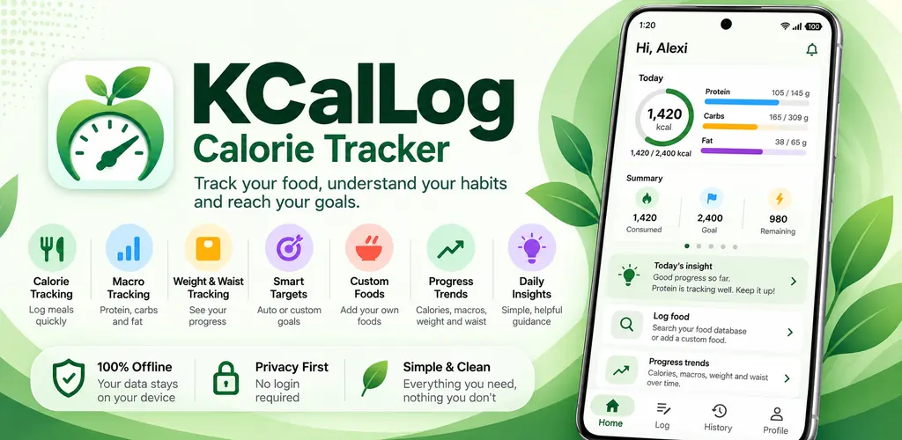
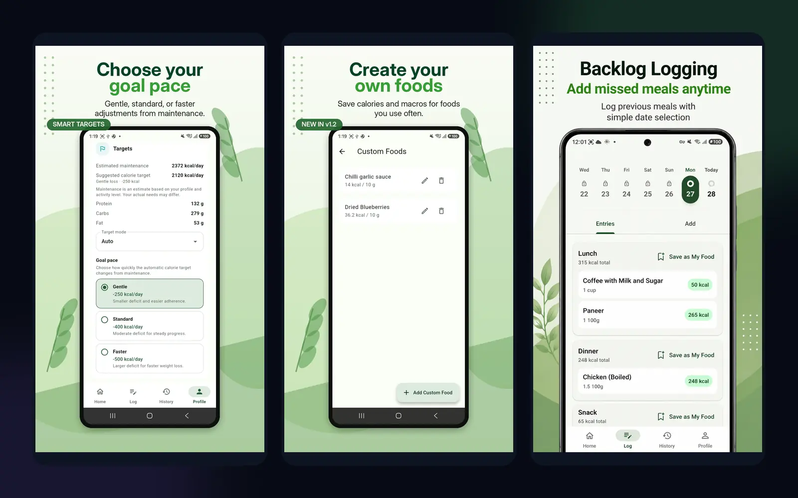

Track calories, protein, carbs and fat across the day.
← All products
Android · Live
KCalLog
A clean calorie and macro tracker built around practical logging, flexible targets and privacy-first local data.

What it does
Focused tools for the job.
Current product capabilities and scope.
Log missing foods manually and save foods you use often.
Use automatic recommendations or set your own calorie and macro targets.
Choose gentle, standard or faster adjustments from estimated maintenance.
Add missed meals later and reuse common meal templates.
No account, no advertising network and no external tracking. Data stays on your device.
Inside the product
See the workflow.
Selected screens from the current product experience.

Availability
Available now on Google Play.
KCalLog is live for Android. Core use is private and local; a one-time Pro unlock is available through Google Play for the full feature set.